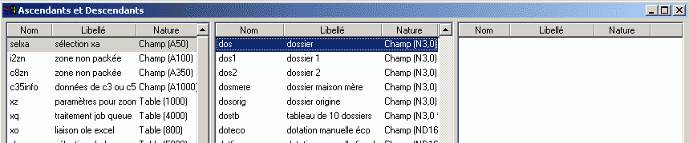
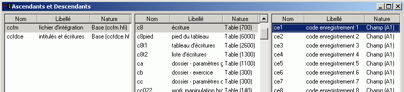

Le choix Ascendants et descendants (bouton  )permet de naviguer dans le dictionnaire.
)permet de naviguer dans le dictionnaire.
Cette fonctionnalité permet, pour un objet particulier, de connaître tous les objets qu’il contient (ses descendants) et tous les objets auquel il appartient (ses ascendants).
Xwin ouvre une fenêtre divisée en trois sous fenêtres :
la fenêtre du centre contient la liste de tous les objets du dictionnaire, c’est à dire la liste des fichiers, des tables, des champs et des index. La colonne Nature permet de savoir s’il s’agit d’un fichier, d’un champ etc.
la fenêtre de gauche contient tous les ascendants de l’objet sélectionné dans la fenêtre du milieu. Attention, vous ne voyez ici que les ascendants directs. Par exemple, si vous sélectionnez un sous-champ dans la fenêtre du milieu, vous aurez dans la fenêtre de gauche le champ qui contient ce sous-champ mais vous n’aurez pas les tables qui contiennent ce sous-champ.
la fenêtre de droite contient les descendants, c’est à dire tous les objets inclus dans l’objet sélectionné dans la fenêtre du milieu.
Pour connaître les ascendants et les descendants d’un objet, cliquez sur l’objet dans la fenêtre du milieu ou double cliquez dans une des deux autres fenêtres sur l’objet en question.
La boîte de dialogue possède trois boutons : Suivant – Précédent – Arbre.
Les boutons « Précédent » et « Suivant » permettent de revenir en arrière et d’avancer dans la sélection effectuée dans la fenêtre du milieu.
Le bouton « Arbre » permet de se positionner dans l’arbre sur l’objet sélectionné dans la fenêtre du milieu et ayant pour ascendant l’objet sélectionné dans le tableau de gauche. Ce bouton n’est actif que si l’élément sélectionné dans la fenêtre de gauche est un fichier ou une table.
Remarques
Si vous voulez connaître les index auxquels appartient un champ, vous devez préalablement sélectionner le choix Index du menu Edition (bouton  ).
).
Si vous voulez connaître tous les endroits ou un champ est utilisé dans une application (dans les sources diva et les masques) positionnez vous sur le champ et tapez F11 ou Shift F11. Voir Naviguer dans un sous projet .
Exemple 1

Le champ dos apparaît dans le dictionnaire comme
- sous-champ des champs selca, i2zn, c8zn et c35info
- champ des tables xz, xq, xo, etc.
Exemple 2
Ascendants et descendants de la table C8.

La table C8 est dans les fichiers ccfm et ccfdce.
Les champs de C8 sont ce1, ce2…